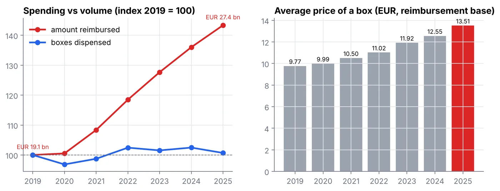
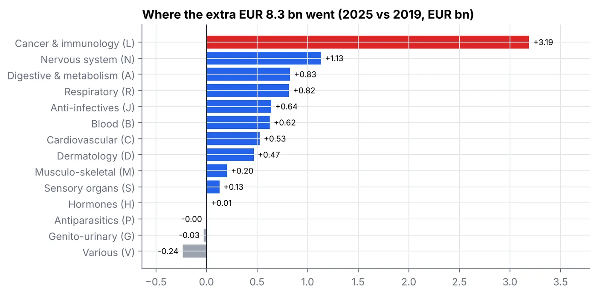

Analyse de données · octobre 2026 · SQL (DuckDB), Python, pandas
Ce que rembourse la France : les médicaments, 2019-2025
Les dépenses de médicaments en pharmacie augmentent : de combien, pourquoi, et comment comparer les régions équitablement ?
En bref · 30 secondes
- Le problème
- Les remboursements de médicaments sont passés de 19,1 à 27,4 milliards d'euros entre 2019 et 2025. Pourquoi ?
- Ce que j'ai fait
- J'ai assemblé les données publiques de l'Assurance maladie, vérifié les totaux à l'euro près, et comparé les régions à âge égal.
- Le résultat
- Le nombre de boîtes n'a pas bougé : la hausse vient de traitements nouveaux et plus chers. Le cancer et l'immunologie en expliquent 3,2 milliards.
- Compétences
- SQL, Python, données de santé
- 27,4 Md€remboursés en 2025, contre 19,1 Md€ en 2019
- +43 %de dépense pour +1 % de boîtes
- 9,77 → 13,51 €prix moyen d'une boîte
- 19 %de la dépense reliée malgré les changements de codes
La question
À quelle vitesse augmentent les dépenses de médicaments remboursés, et pourquoi ? Quels médicaments et quels domaines expliquent la hausse ? Comment ont évolué quelques usages suivis en santé publique ? Et comment comparer les régions une fois l'âge pris en compte ?
Les données
Open Medic, publié par l'Assurance maladie à partir du Système national des données de santé (SNDS) : chaque boîte de médicament délivrée en pharmacie de ville et remboursée, de 2019 à 2025, avec le nombre de patients, par âge, sexe et région. Les médicaments hospitaliers ne sont pas inclus, et les montants excluent les honoraires des pharmaciens.
La méthode
Chargement. Les nombres sont au format français (1.171,74) et les fichiers ne partagent pas le même encodage (Windows-1252 ou UTF-8) : tout est réécrit en UTF-8, puis chargé et converti en SQL dans DuckDB.
Validation. Les totaux calculés à partir des trois niveaux de détail (molécule, classe, groupe) sont identiques chaque année, à l'euro près.
Suivre une molécule dans le temps. Une molécule ne garde pas toujours le même code : l'OMS a déplacé les analogues du GLP-1 en 2020 et réorganisé les anticancéreux en 2021, et certains libellés sont mal orthographiés certaines années. J'ai relié les codes et libellés qui désignent la même molécule avec un algorithme union-find : cela concerne 19 % de la dépense.
Comparer les régions à âge égal. Standardisation directe : la dépense par habitant de chaque région, dans chaque classe d'âge, est pondérée par la structure d'âge nationale.
Les résultats
La dépense monte, pas le volume
L'Assurance maladie a remboursé 27,4 milliards d'euros de médicaments délivrés en pharmacie en 2025, contre 19,1 milliards en 2019 : +43 % en six ans. Le nombre de boîtes, lui, n'a pas bougé (+1 %). Le prix moyen d'une boîte est passé de 9,77 € à 13,51 € : la hausse vient de ce qui est délivré (des traitements nouveaux et chers), pas de la quantité.

Où sont allés les 8,3 milliards de plus
Les médicaments du cancer et de l'immunologie expliquent 3,2 milliards de la hausse (38 %). Une seule molécule, le tafamidis (maladie cardiaque rare), est passée de 45 millions à 1,07 milliard d'euros pour environ 16 000 patients. La dépense se concentre : 55 molécules sur environ 1 100 font la moitié du total, contre 70 en 2019.

Trois évolutions d'usage
- Analogues du GLP-1 (diabète) : de 415 000 patients en 2020 à 932 000 en 2025.
- Antibiotiques : effondrement pendant la pandémie (-17 % de patients en 2020), retour au niveau de 2019 en 2024.
- TDAH : les adultes traités par méthylphénidate sont passés de 17 000 à 114 000 (×6,8).
Combien de patients, année par année
Choisissez une série, puis survolez les points pour lire les valeurs.
Les régions à âge égal
Les plus de 60 ans coûtent 852 € par habitant, contre 262 € pour les 20-59 ans et 110 € pour les moins de 20 ans. Les régions âgées paraissent donc chères. Après standardisation sur l'âge, l'Île-de-France, la région la plus jeune, passe de la 11e à la 3e place sur 12 ; la Nouvelle-Aquitaine recule de la 2e à la 7e ; le Grand Est est 4e.
Le classement des régions change avec l'âge
Passez de la dépense brute à la dépense à âge égal : les régions jeunes remontent, les régions âgées descendent.
Les limites
- Pharmacies de ville uniquement : beaucoup de traitements coûteux du cancer sont délivrés à l'hôpital et n'apparaissent pas ici.
- Prix catalogue, avant les remises confidentielles négociées avec l'État : la dépense nette est plus faible.
- Trois classes d'âge seulement : la standardisation reste grossière.
Tout se relance avec python run_all.py.